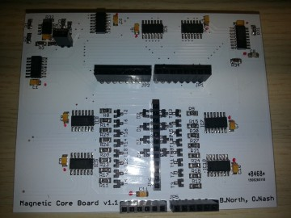
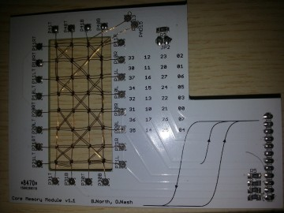
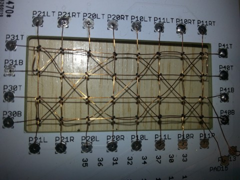

Core memory shield replicated
2015-07-29
Two Italian students, Nicola Didomenico and Salvatore Del Popolo, working at the University of Catania, got in touch with some queries about the core memory shield. After a few emails back and forth, and considerable persistence on their side, they reported a successful build of the shield:
Test procedures now return following values: set 0 0 1000 set 1 0 1000 interfere 0 0 0 1000 interfere 0 1 0 1000 interfere 1 0 0 1000 interfere 1 1 0 1000 All commands: r, w, R, and W perfectly work, as well.
The highlighted zeros are the error counts after 1,000 iterations of the test procedures. Perfect results!
This is the first successful replication we know about, and in fact the first successful build at all using the v1.1 boards. (Our shields were re-worked v1.0 boards.) Very gratifying that it all worked for them, over four years since we released the designs.
Photos
The main driver shield:

The core daughter-board:

The core array itself:

Thanks to Nicola and Salvatore for these photos and permission to use them.